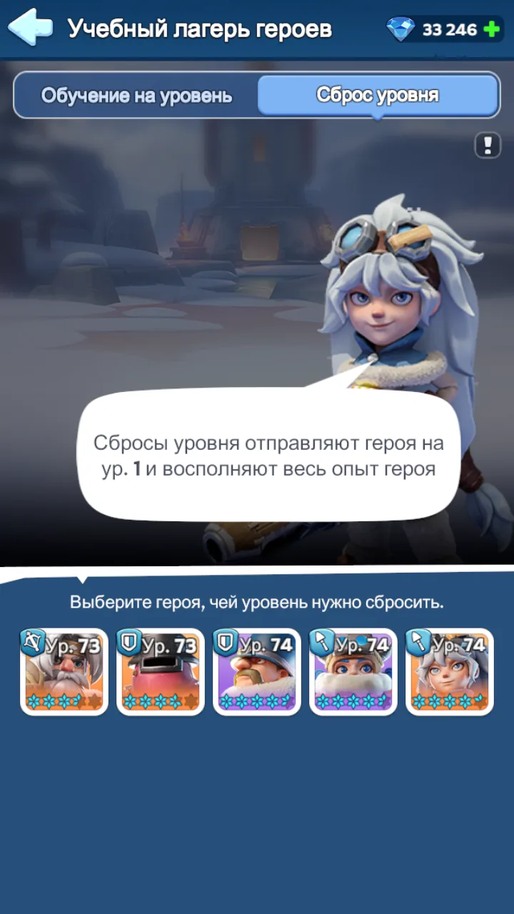

Герои
Навыки, развитие, типы войск и практические советы по героям.
Содержание
Герои: кого и для чего использовать
В «Белой мгле» нельзя оценивать героя только по редкости или общей мощности. Один герой может быть отличным на Арене, но слабее в рейдах, другой может оставаться полезным много поколений благодаря одному конкретному навыку.
Два типа навыков
У героев есть две разные группы навыков:
Освоение используется там, где герои сражаются сами: в Освоении и на Арене.
Экспедиция используется, когда герои ведут войска: в обычных походах, PvP, рейдах, гарнизоне, охоте на зверей и других боях войск.
Тип героя
Каждый боевой герой относится к одному из трёх типов:
Пехота сильнее против копейщиков, копейщики против стрелков, стрелки против пехоты.
Но один только тип войск не определяет ценность героя. Навыки, звёзды, поколение и конкретный режим боя могут быть важнее.
Не прокачивай всех подряд
Лучше полностью развивать нескольких нужных героев, чем распределять фрагменты и материалы между всем списком.
Особенно осторожно расходуй универсальные мифические фрагменты. Новые поколения героев появляются по мере развития государства, поэтому заранее оставлять запас часто полезнее, чем вкладывать всё в первого доступного легендарного героя.
🎓 Учебный лагерь
Учебный лагерь позволяет использовать героев высокого уровня без необходимости вручную прокачивать каждого из них опытом.
В системе есть пять героев-инструкторов. Герои, размещённые на местах учёбы, автоматически подстраиваются под минимальный уровень этих пяти инструкторов.

Как определяется уровень лагеря
Система смотрит на уровни пяти инструкторов и берёт самый низкий из них.
74 / 74 / 74 / 73 / 73 → уровень Учебного лагеря будет 73.
Если одного из самых слабых инструкторов поднять выше, уровень лагеря изменится только тогда, когда поднимется минимальный уровень среди всей пятёрки.
Что происходит с героем на месте учёбы
Если собственный уровень героя ниже уровня лагеря, он временно получает уровень Учебного лагеря.
реальный уровень героя 35 → уровень лагеря 73 → на месте учёбы герой используется как 73 уровня.
При этом лагерь повышает именно уровень героя. Он не добавляет звёзды, не прокачивает навыки и не улучшает снаряжение.
Если собственный уровень героя уже выше уровня лагеря, герой не понижается и сохраняет свой уровень.
Если убрать героя из лагеря
Герой возвращается к своему настоящему уровню, который был прокачан вручную.
35 → в лагере 73 → убрали из лагеря → снова 35.
Сброс уровня

Во вкладке «Сброс уровня» можно вернуть героя на 1 уровень. Потраченный на его уровень опыт героя возвращается, поэтому его можно перераспределить на других героев.
Как выгоднее расходовать опыт героя
Не стоит прокачивать опытом всех героев подряд. Выгоднее концентрировать опыт на героях, которые формируют пятёрку инструкторов, а остальных размещать на местах учёбы.
прокачиваем основных героев → растёт минимальный уровень пяти инструкторов → растёт уровень лагеря → остальные герои автоматически подтягиваются.
Главное
- уровень лагеря задаёт самый низкий уровень среди пяти инструкторов;
- герои на местах учёбы получают этот уровень временно;
- звёзды, навыки и снаряжение лагерь не повышает;
- после удаления из лагеря герой возвращается к своему реальному уровню;
- сброс уровня возвращает героя на 1 уровень и возвращает потраченный опыт героя.
Герои в начале игры
Для обычных боёв с войсками хорошей ранней основой являются Сергей, Молли и Бахити.
Джесси особенно полезна в рейдах благодаря навыку, увеличивающему наносимый войсками урон.
Джассер также остаётся полезным участником рейдов.
Джина ценна прежде всего для охоты на зверей и Полярного Ужаса: её навыки уменьшают расход энергии губернатора и ускоряют походы на зверей.
Медведь и присоединение к рейду
Когда ты создаёшь рейд, учитываются навыки всех трёх твоих героев.
Когда ты присоединяешься к чужому рейду, особенно важен первый герой слева: в общий набор попадает его первый навык Экспедиции.
В общий набор попадают до четырёх первых экспедиционных навыков участников. По игровым руководствам, игра отбирает до четырёх навыков участников по уровню первого экспедиционного навыка: более высокий уровень может вытеснить более низкий, а при равенстве преимущество остаётся у вступившего раньше. Поэтому неподходящий навык 5-го уровня может занять место нужного навыка того же уровня. Повтор одного героя у разных участников допустим, но четыре одинаковых усиления не всегда выгоднее сочетания разных эффектов; отдельные дебаффы могут не суммироваться. Проверяй активные навыки через жёлтый флаг сбора до отправки. Проверяй список действующих навыков сбора, а не только мощность участников.
Сохранённые построения: заранее подготовь разные шаблоны: для своего сбора с полноценной тройкой героев, для присоединения к атаке с подходящим героем слева и для защиты с оборонительным первым навыком. В каждом сохрани нужный тип и количество войск. При ручном вступлении в сбор выбери шаблон на экране отправки и проверь, что первый герой не заменился, а войска доступны.
Автовступление не равно быстрому выбору шаблона: сохранённое построение само по себе не назначается автоматически для любого сбора. В поддерживаемых автоматических рейдах на Полярный Ужас может быть отдельная настройка отправляемого построения; названия и перечень событий проверяй в текущей RU-игре. Для Медведя и PvP-сборов не рассчитывай, что игра сама выберет лучший первый навык. Если автовступление в Полярный Ужас уже работает, оно может занять твоих героев и марши. Перед важным боем проверь доступные отряды и при необходимости отключи автовступление.
Для ранних поколений хорошими атакующими примерами являются Джесси, Джассер, Со-Юн и Джеронимо. По мере появления новых поколений список подходящих героев расширяется.
Арена
На Арене используются навыки Освоения, а не Экспедиции.
Здесь важны состав из пяти героев, их расположение, классы, контроль, урон и выживаемость. Поэтому герой, великолепный для рейда или Медведя, не обязательно будет таким же сильным на Арене.
Как правильно сравнивать героев
Сравнивай героев при похожем уровне развития: звёздах, уровне навыков, снаряжении и эксклюзивном снаряжении.
Новая легендарка с одной звездой не обязательно будет полезнее полностью развитого старого героя.